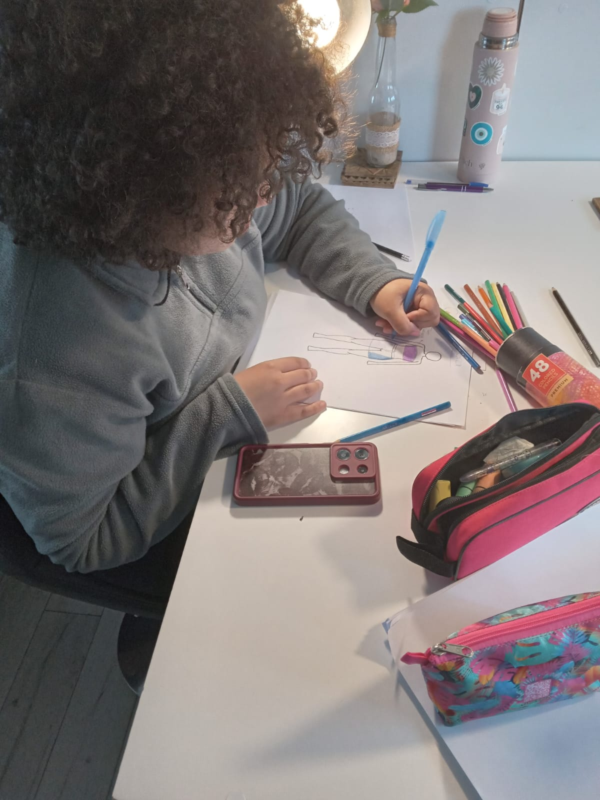

CORA CONFECCIONES
Prendas creadas con dedicación, personalidad y atención en cada detalle.

Moda con alma ♡
Conocé algunos de los trabajos y servicios que realizamos.
Cargando servicios...
NUESTROS TRABAJOS
Algunos de los trabajos realizados en Cora Confecciones.
Cargando galería...
¿TENÉS DUDAS?
Cargando preguntas...
CONTACTO